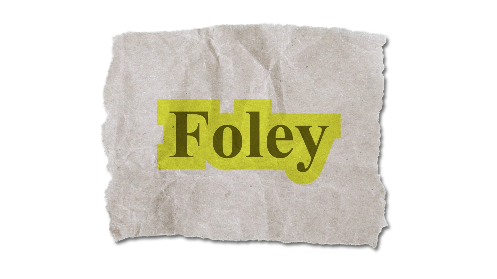

Project Brief
For this self-initiated project, I set out to make a short motion graphics explainer about something most people hear in every movie without ever noticing it: Foley, the craft of building a film’s sound effects from scratch after filming. I chose the topic because it’s built on a reveal. The punch, the snapping bone, and the galloping horse are rarely what they sound like. That gave the video a natural structure: hook the viewer with a familiar movie moment, define the term, and then show the everyday objects behind the sounds.
The visual language is a cut-and-paste collage of torn kraft paper, halftone cutouts, and neon yellow starbursts. The handmade look mirrors the subject: Foley is made by hand from ordinary objects, so the visuals are too. Each prop pairing is staged as a quick reveal, so the viewer connects the object to the sound it fakes: celery for a breaking bone, cornstarch in a leather pouch for snow underfoot, and coconut shells for hooves. The video closes on a real film fall to land the central point: without Foley, even the biggest scene falls flat.